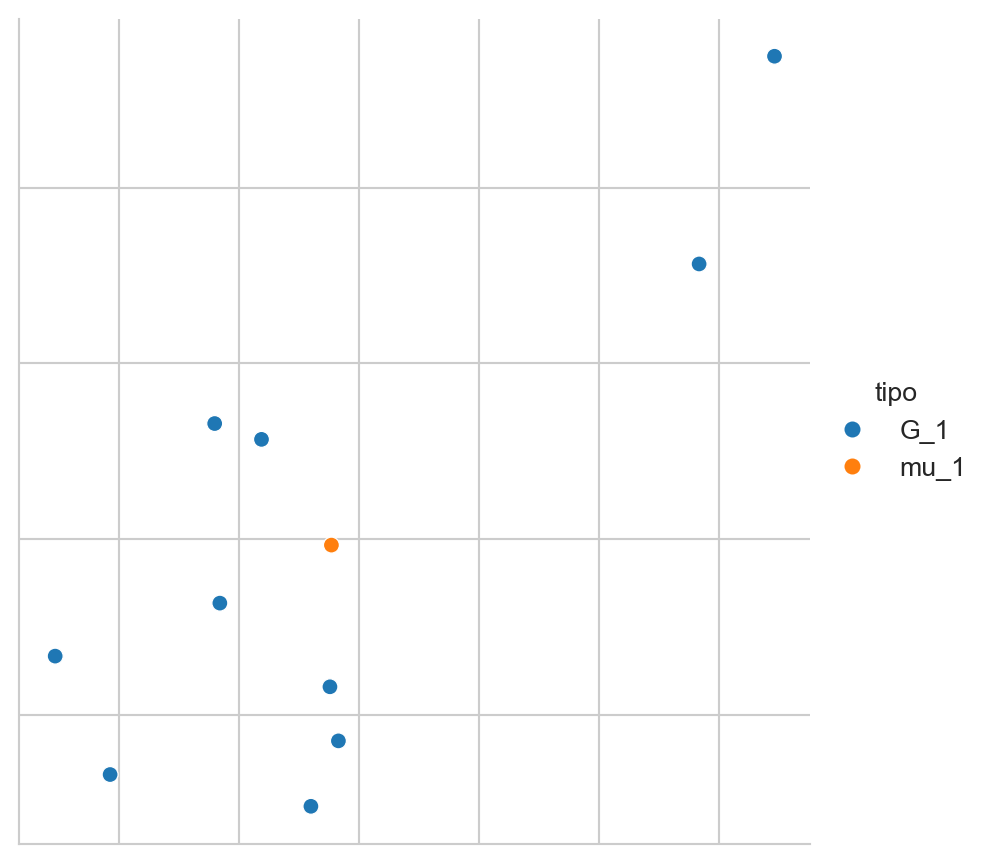
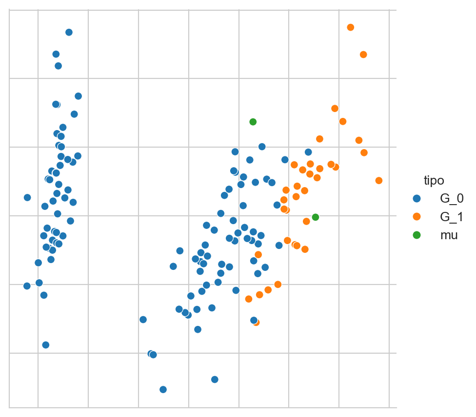
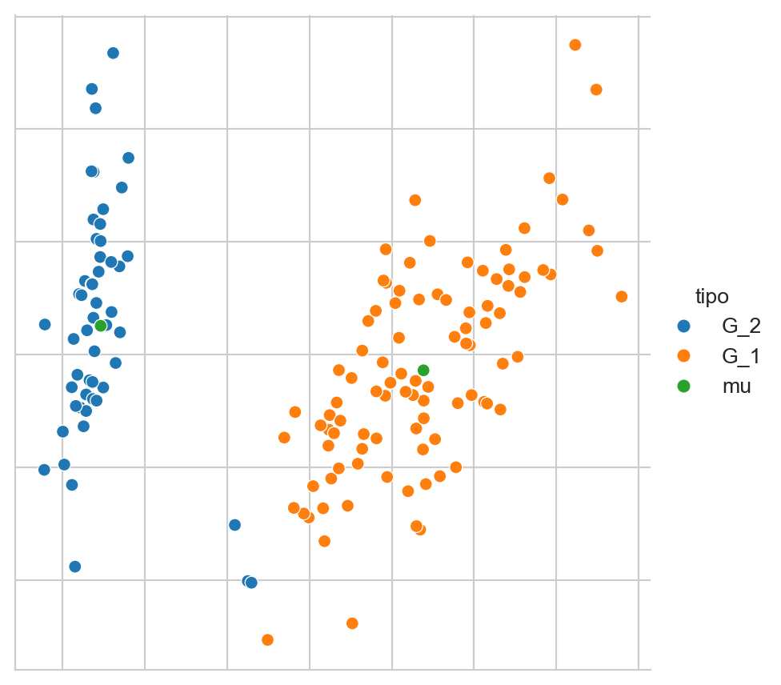
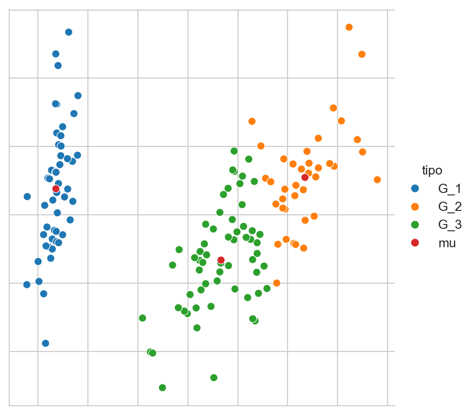
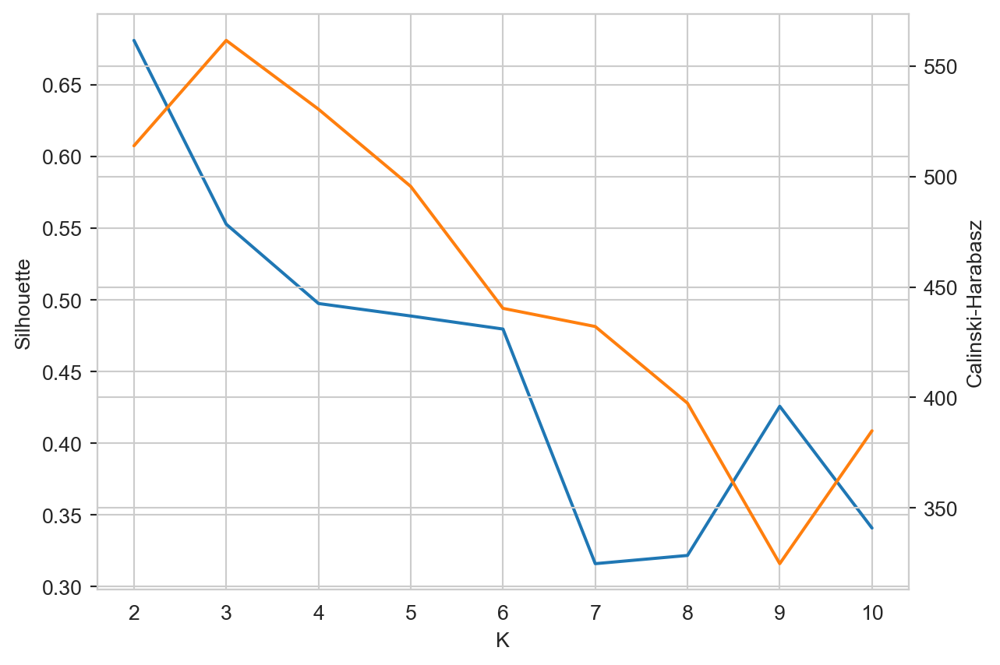

from sklearn.cluster import KMeans
from sklearn.datasets import load_iris
from sklearn import decomposition
from sklearn import metrics
from scipy import linalg
from itertools import permutations
from matplotlib import pylab as plt
import numpy as np
import pandas as pd
import seaborn as sns6 Agrupamiento
El objetivo de la unidad es conocer y aplicar el algoritmo de agrupamiento k-medias
6.1 Paquetes usados
6.2 Introducción
Esta unidad trata el problema de agrupamiento, el cual es un problema de aprendizaje no supervisado (Sección 1.3), en el cual se cuenta con un conjunto \(\mathcal D = \{ x_i \mid i=1, \ldots, N\}\) donde \(x_i \in \mathbb R^d.\) El objetivo de agrupamiento es separar los elementos de \(\mathcal D\) en \(K\) grupos. Es decir asociar a \(x_i \in \mathcal D\) a un grupo \(x_i \in G_j\) donde \(\cup_j^K G_j = \mathcal D\) y \(G_j \cap G_i = \emptyset\) para todo \(i \neq j.\)
Por supuesto existen diferentes algoritmos que se han desarrollado para generar esta partición, en particular, todos de ellos encuentran la participación optimizando una función objetivo que se considera adecuada para el problema que se está analizando. En particular, esta unidad se enfoca a describir uno de los algoritmos de agrupamiento más utilizados que es K-medias.
6.3 K-medias
De manera formal el objetivo de K-medias es encontrar la partición \(G = \{G_1, G_2, \ldots, G_K \}\) que corresponda al \(\min \sum_{i=1}^K \sum_{x \in G_i} \mid\mid x - \mu_i \mid\mid,\) donde \(\mu_i\) es la media de todos los elementos que pertenecen a \(G_i.\)
Para comprender la función objetivo (\(\min \sum_{i=1}^K \sum_{x \in G_i} \mid\mid x - \mu_i \mid\mid\)) de k-medias se explican los dos componentes principales que son las medias \(\mu_i\) y los grupos \(G_i.\)
Para ilustrar tanto a \(\mu_i\) como a \(G_i\) se utiliza el problema del iris (Sección 5.5.1) cuyos datos se pueden obtener de la siguiente manera.
D, y = load_iris(return_X_y=True)6.3.1 \(\mu_i\)
Como se describió, \(\mu_i\) es la media de los elementos que corresponden al grupo \(G_i\). Asumiendo que el grupo \(1\) (\(G_1\)) tiene \(10\) elementos seleccionados de manera aleatoria de \(\mathcal D\) como se muestra a continuación.
index = np.arange(len(D))
np.random.shuffle(index)
sel = index[:10]
G_1 = D[sel]La variable G_1 tiene los 10 elementos considerados como miembros de \(G_1\) entonces \(\mu_1\) se calcula como la media de cada componente, lo cual se puede calcular con el siguiente código.
mu_1 = G_1.mean(axis=0)La Figura 6.1 muestra los elementos seleccionados (\(x \in G_1\)) y la media (\(\mu_1\)) del grupo. Los elementos se encuentran en \(\mathbb R^4\) y para visualizarlos se transformaron usando PCA descrito en la Sección 5.5.1.
Código
pca = decomposition.PCA(n_components=2).fit(D)
Xn = pca.transform(G_1)
mu = pca.transform(np.atleast_2d(G_1.mean(axis=0)))[0]
data = pd.DataFrame(dict(x=Xn[:, 0], y=Xn[:, 1], tipo=['G_1'] * Xn.shape[0]))
data.loc[Xn.shape[0]] = dict(x=mu[0], y=mu[1], tipo='mu_1')
sns.set_style('whitegrid')
fig = sns.relplot(data, kind='scatter', hue='tipo', x='x', y='y')
fig.tick_params(bottom=False, top=False,
left=False, right=False,
labelbottom=False, labelleft=False)
fig.set(xlabel=None, ylabel=None)

6.3.2 \(G_i\)
El complemento del procedimiento anterior es encontrar los elementos de \(G_i\) dando la \(\mu_i\). El ejemplo consiste en generar dos medias, es decir, \(K=2\) y encontrar los elementos que corresponden a las medias generadas. Se puede utilizar cualquier procedimiento para generar dos vectores de manera aleatoria, pero en este ejemplo se asume que estos vectores corresponden a dos elementos de \(\mathcal D.\) Estos elementos son los que se encuentran en los indices \(50\) y \(100\) tal y como se muestra en las siguientes instrucciones.
mu_1 = D[50]
mu_2 = D[100]El elemento \(x\) pertenece al grupo \(G_i\) si el valor \(\mid\mid x - \mu_i\mid\mid\) corresponde al \(\min_j \mid\mid x - \mu_j\mid\mid.\) Entonces se requiere calcular \(\mid\mid x - \mu_i\mid\mid\) para cada elemento \(x \in \mathcal D\) y para cada una de las medias \(\mu_i\). Esto se puede realizar con la siguiente instrucción
dis = np.array([linalg.norm((D - np.atleast_2d(mu)),
axis=1)
for mu in [mu_1, mu_2]]).Tdonde se puede observar que el ciclo itera por cada una de las medias, i.e., mu_1 y mu_2. Después se calcula la norma utilizando la función linalg.norm y finalmente se regresa la transpuesta para tener una matriz de 150 renglones y dos columnas que corresponden al número de ejemplos en \(\mathcal D\) y a las dos medias. Los valores de dis[50] y dis[100] son array([0. , 1.8439]) y array([1.8439, 0. ]) respectivamente. Tal y como se espera porque \(\mu_1\) corresponde al índice 50 y \(\mu_2\) es el índice 100. Estos dos ejemplos, array([0. , 1.8439]) y array([1.8439, 0. ]), permiten observar que el argumento mínimo de dis identifica al grupo del elemento, haciendo la consideración que el índice 0 representa \(G_1\) y el índice 1 es \(G_2.\) La siguiente instrucción muestra como se realiza esta asignación.
G = dis.argmin(axis=1)La Figura 6.2 muestra los grupos formados, el primer grupo G_1 se encuentra en azul y el segundo en naranja, también muestra los elementos que fueron usados como medias de cada grupo; estos elementos se observan en color verde.
Código
pca = decomposition.PCA(n_components=2).fit(D)
D_pca = pca.transform(D)
data = pd.DataFrame([dict(x=x, y=y, tipo=f'G_{g}')
for (x, y), g in zip(D_pca, G)])
mu = np.vstack((D_pca[50], D_pca[100]))
mu_data = pd.DataFrame(dict(x=mu[:, 0],
y=mu[:, 1],
tipo=['mu'] * mu.shape[0]))
data = pd.concat((data, mu_data))
sns.set_style('whitegrid')
fig = sns.relplot(data, kind='scatter', hue='tipo', x='x', y='y')
fig.tick_params(bottom=False, top=False,
left=False, right=False,
labelbottom=False, labelleft=False)
fig.set(xlabel=None, ylabel=None)

6.3.3 Algoritmo
Habiendo explicado \(\mu_i\) y \(G_i\) se procede a describir el procedimiento para calcular los grupos utilizado por k-medias. Este es un procedimiento iterativo que consta de los siguientes pasos.
- Se generar \(K\) medias de manera aleatoria, donde \(\mu_i\) corresponde a \(G_i.\)
- Para cada media, \(\mu_i\), se seleccionan los elementos más cercanos, esto es, \(x \in G_i\) si \(\mid\mid x - \mu_i\mid\mid\) corresponde al \(\min_j \mid\mid x - \mu_j\mid\mid.\)
- Se actualizan las \(\mu_i\) con los elementos de \(G_i.\)
- Se regresa al paso 2.
El procedimiento termina cuando se llega a un número máximo de iteraciones o que la variación de los \(\mu_i\) es mínima, es decir, que los grupos no cambian.
6.4 Ejemplo: Iris
En el siguiente ejemplo se usará K-medias para encontrar 2 y 3 grupos en el conjunto del iris. La clase se inicializa primero con 2 grupos (primera línea). En la segunda instrucción se predice los grupos para todo el conjunto de datos. Las medias para cada grupo se encuentran en el atributo cluster_centers_.
m = KMeans(n_clusters=2, n_init='auto').fit(D)
cl = m.predict(D)La Figura 6.3 muestra el resultado del algoritmo k-means en el conjunto del Iris, se muestran los dos grupos \(G_1\) y \(G_2\) y en color verde \(\mu_1\) y \(\mu_2\).
Código
pca = decomposition.PCA(n_components=2).fit(D)
D_pca = pca.transform(D)
mu = pca.transform(m.cluster_centers_)
mu_data = pd.DataFrame(dict(x=mu[:, 0],
y=mu[:, 1],
tipo=['mu'] * mu.shape[0]))
data = pd.DataFrame(dict(x=D_pca[:, 0],
y=D_pca[:, 1],
tipo=[f'G_{x+1}' for x in cl]))
data = pd.concat((data, mu_data))
sns.set_style('whitegrid')
fig = sns.relplot(data, kind='scatter', hue='tipo', x='x', y='y')
fig.tick_params(bottom=False, top=False,
left=False, right=False,
labelbottom=False, labelleft=False)
fig.set(xlabel=None, ylabel=None)

Un procedimiento equivalente se puede realizar para generar tres grupos, el único cambio es el parámetro n_clusters en la clase KMeans de la siguiente manera.
m = KMeans(n_clusters=3, n_init='auto').fit(D)
cl = m.predict(D)La Figura 6.4 muestra los tres grupos y con sus tres respectivas medias en color rojo.
Código
pca = decomposition.PCA(n_components=2).fit(D)
D_pca = pca.transform(D)
mu = pca.transform(m.cluster_centers_)
mu_data = pd.DataFrame(dict(x=mu[:, 0],
y=mu[:, 1],
tipo=['mu'] * mu.shape[0]))
data = pd.DataFrame(dict(x=D_pca[:, 0],
y=D_pca[:, 1],
tipo=[f'G_{x+1}' for x in cl]))
data = pd.concat((data, mu_data))
sns.set_style('whitegrid')
fig = sns.relplot(data, kind='scatter', hue='tipo', x='x', y='y')
fig.tick_params(bottom=False, top=False,
left=False, right=False,
labelbottom=False, labelleft=False)
fig.set(xlabel=None, ylabel=None)

6.5 Rendimiento
Recordando que en aprendizaje no supervisado no se tiene una variable dependiente que predecir. En este caso particular se utilizó un problema de clasificación para ilustrar el procedimiento de k-medias, entonces se cuenta con una clase para cada elemento \(x \in \mathcal D\). Además se sabe que el problema del iris tiene tres clases, entonces utilizando los tres grupos obtenidos previamente podemos medir que tanto se parecen estos tres grupos a las clases del iris. Es decir, se puede saber si el algoritmo de k-medias agrupa los elementos de tal manera que cada grupo corresponda a una clase del iris.
Los grupos generados se encuentran en la lista cl y las clases se encuentran en y. La lista y tiene organizada las clases de la siguiente manera: los primeros 50 elementos son la clase \(0\), los siguientes \(50\) son clase \(1\) y los últimos son la clase \(2\). Dado que K-medias no conoce los clases y genera los grupos empezando de manera aleatoria, entonces es probable que los grupos sigan una numeración diferente al problema del iris. Los grupos en cl están organizados de la siguiente manera aproximadamente los \(50\) primeros elementos son del grupo \(1\), los siguientes son grupo \(0\) y finalmente los últimos son grupo \(2\). Entonces se puede hacer una transformación usando la variable perm con la siguiente información array([2, 0, 1]).
Utilizando perm se calcula la exactitud (Sección 4.2.2) utilizando la siguiente instrucción. Se obtiene una exactitud de \(0.8933\) que significa que la mayoría de los datos se agrupan en un conjunto que corresponde a la clase del conjunto del iris.
acc = metrics.accuracy_score(y, perm[cl])En general en agrupamiento no se cuenta con la composición de los grupos, es más, se desconocen cuántos grupos modela el problema. Para estas ocasiones es imposible medir el accuracy o cualquier otra medida de agrupamiento que requiera la composición de real de los grupos.
Una medida que no requiere conocer los grupos es el Silhouette Coefficient; el cual mide la calidad de los grupos, mientras mayor sea el valor significa una mejor calidad en los grupos. Este coeficiente se basa en la siguiente función:
\[ s = \frac{b - a}{\max(a, b)}, \]
donde \(a\) corresponde a la distancia media entre un elemento y todos las objetos del mismo grupo; y \(b\) es la distancia media entre la muestra y todos los elementos del grupo más cercano.
Por ejemplo, en el problema del Iris \(s\) tiene un valor de \(0.5528\) calculado con la siguiente instrucción.
sil = metrics.silhouette_score(D, cl, metric='euclidean')Otra medida de la calidad de los grupos es índice de Calinski-Harabasz que mide la dispersión entre grupos y dentro del grupo, al igual que Silhouette, mientras mayor sea la estadística mejor es el agrupamiento. Para el problema del Iris el índice de Calinski-Harabasz tiene un valor de \(561.6278\) obtenido con la siguiente instrucción.
cal_har = metrics.calinski_harabasz_score(D, cl)6.6 Número de Grupos
Utilizando una medida de rendimiento de agrupamiento se analizar cual sería el número adecuado de grupos para un problema dado. El procedimiento es variar el número de grupos y medir el rendimiento para cada grupo y quedarse con aquel que da el mejor rendimiento considerando también el número de grupos.
Por ejemplo, el siguiente instrucción calcula el coeficiente de Silhouette y el índice de Calinski-Harabasz en el problema del Iris.
S1 = []
S2 = []
for k in range(2, 11):
m = KMeans(n_clusters=k, n_init='auto').fit(D)
cl = m.predict(D)
_ = metrics.silhouette_score(D, cl, metric='euclidean')
S1.append(_)
_ = metrics.calinski_harabasz_score(D, cl)
S2.append(_)Estas dos estadísticas se pueden observar en la Figura 6.5. En color azul se observa el coeficiente de Silhouette; donde el mejor resultado es cuando \(K=2\). En color naranja se muestra el índice Calinski-Harabasz done el mejor resultado se tiene cuando \(K=3\). Considerando que se está trabajando con el problema del Iris se conoce que la mejor agrupación es para \(K=3\) dado que son tres clases.
Código
data = pd.DataFrame([{'Calinski-Harabasz': b, 'Silhouette': a, 'K': k + 2}
for k, (a, b) in enumerate(zip(S1, S2))])
data.set_index('K', inplace=True)
sns.set_style('whitegrid')
sns.lineplot(data=data.Silhouette, color=sns.color_palette()[0])
ax2 = plt.twinx()
fig = sns.lineplot(data=data['Calinski-Harabasz'],
color=sns.color_palette()[1], ax=ax2)
